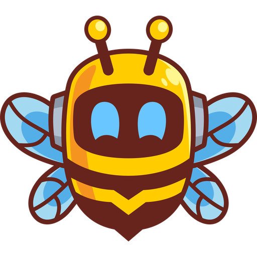

Security Advisor
DSM’s own security scan for every NAS, scored per customer.

Swarm watches every NAS you look after: disks, pools, backups and DSM updates, for every customer, from one portal on your own server.

Adoption works like UniFi. The NAS shows a pairing code, you type it in the portal and pick the customer. The agent signs every report with its own ed25519 key.

Which NAS stopped reporting, which volume fills up, which customer needs a call today. The heartbeat shows every report of the last day, a bar per half hour.
Pending sectors on drive 2, a pool that lost a disk, a volume that is full within 30 days. Swarm raises a notice with advice, and closes it on its own when the check is fine again.
Notices go where you already work:

Every Hyper Backup and Active Backup task, its last result and its log, and which shared folders have no copy anywhere else.
Restore proof: Swarm drops a canary file in each task, reads it back from the backup and compares it. Cloud backup: one click gives a NAS its own Wasabi bucket and key.

Sign in to DSM and open a root terminal from the portal, over an outgoing tunnel from the agent: no port forwarding, a reason for every session, and a recording.
DSM updates in rings. A new version reaches your test lab first, and the next ring only when the ring before came back healthy.

Quiet hours and maintenance mode keep the pager still. Notices close on their own when a check is fine again, so a green fleet means nobody needs to look.
And when you want to ask instead of click, the built-in MCP server lets Claude and other AI assistants read the fleet.
22 of 22 NAS units are fine · quiet hours until 07:00
DSM’s own security scan for every NAS, scored per customer.
One baseline for the whole fleet. Swarm shows what deviates.
Reader, technician or admin per customer. Sign in with Entra ID or any OpenID provider.
Every action, DSM sign-in and terminal session, with who did it and why.
Update DSM packages per NAS, right away or in the maintenance window.
One package per DSM generation, for ARM and x86 models alike.
One Docker image with SQLite. Open the portal on port 8080, install the package on a NAS and adopt it.
docker run -d --name swarm -p 8080:8080 -v swarm-data:/data \ -e SWARM_ADMIN_EMAIL=you@example.com \ -e SWARM_ADMIN_PASSWORD='at-least-10-characters' \ ghcr.io/getswarmbot/swarm:main
.spk from Releases.